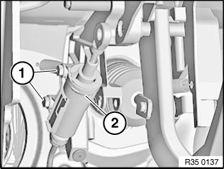
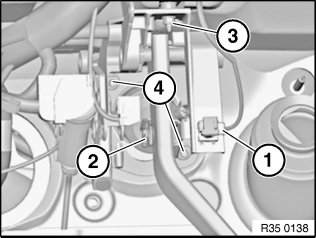
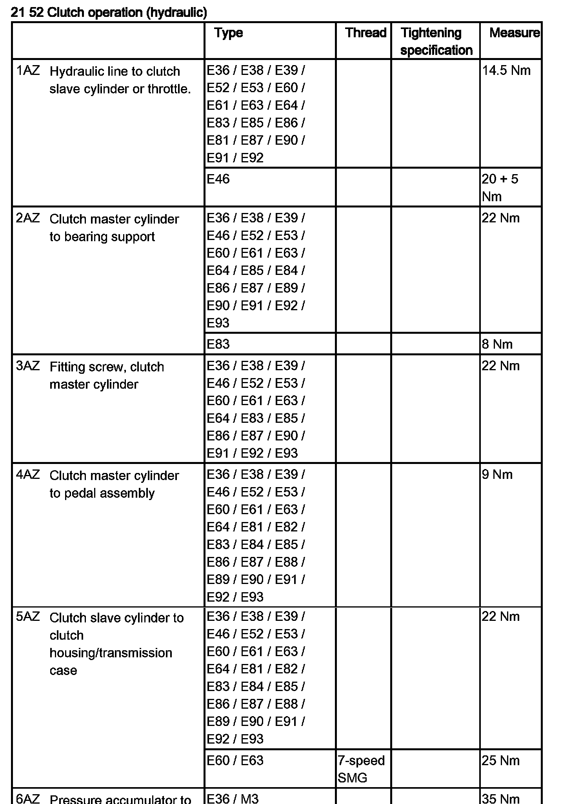
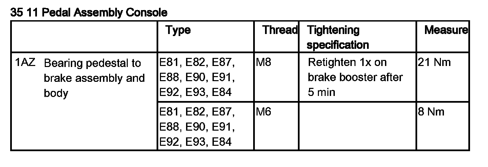
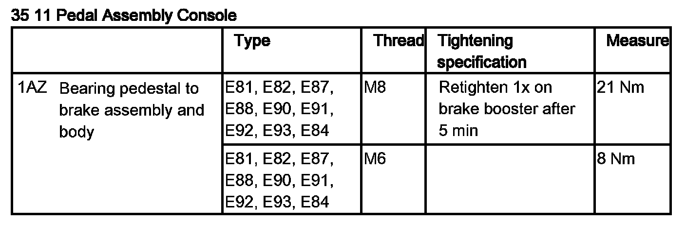

<!DOCTYPE html>
<html>
  <head>
    <title>35 11 000 Removing and Installing Complete Bearing Block For Foot Pedal — 2011 BMW 128i Coupe (E82) L6-3.0L (N52K) Service Manual | Operation CHARM</title>
    <meta name='description' content="Detailed repair manual for the 2011 BMW 128i Coupe (E82) L6-3.0L (N52K).">
    <link rel='stylesheet' href="../style.css">
    <meta name='viewport' content='width=device-width, initial-scale=1.0' />
  </head>
  <body>
    <div class='theme-colors header'>
      <div class='branding'><b>Operation CHARM</b>: Car repair manuals for everyone.</div>
<div class=breadcrumbs><a class='breadcrumb-part' href="../">Home</a> <b>&gt;&gt;</b> <a class='breadcrumb-part' href="../BMW/">BMW</a> <b>&gt;&gt;</b> <a class='breadcrumb-part' href="../BMW/2011/">2011</a> <b>&gt;&gt;</b> <a class='breadcrumb-part' href="../index.html">128i Coupe (E82) L6-3.0L (N52K)</a> <b>&gt;&gt;</b> <a class='breadcrumb-part' href="0.html">Repair and Diagnosis</a> <b>&gt;&gt;</b> <a class='breadcrumb-part' href="0.html#Brakes%20and%20Traction%20Control/">Brakes and Traction Control</a> <b>&gt;&gt;</b> <a class='breadcrumb-part' href="1370.html">Brake Pedal Assy</a> <b>&gt;&gt;</b> <a class='breadcrumb-part' href="1370.html#Service%20and%20Repair/">Service and Repair</a> <b>&gt;&gt;</b> <a class='breadcrumb-part' href="10296.html">35 11 000 Removing and Installing Complete Bearing Block For Foot Pedal</a></div></div>
<div class="theme-colors floaty-message lemon-message">
  <b style="font-size: 1.5em; color: gold">Manuals through 2025 now available!</b>
  <br><br>
  Our trusted friends have launched a new website named LEMON, which has newer manuals. It also contains all the CHARM manuals.
  <br><br>
  LEMON is the spiritual successor to  CHARM, I recommend you try it!
  <br><br>
  Link: <a style='white-space: nowrap' href="../missing-page">lemon-manuals.la</a> or <a style='white-space: nowrap' href="../missing-page">lemon-manuals.org.ua</a>
  <br><br>
  (Some people have issue connecting. LEMON is investigating. For now, use Firefox or change your DNS server)
  <br><br>
  Or, hide this message: <a href="../missing-page">temporarily</a> or <a href="../missing-page">permanently</a>
</div>
<div class='main'>
<h1>35 11 000 Removing and Installing Complete Bearing Block For Foot Pedal</h1><br><br><br><br><br><b>35 11 000 Removing and installing complete bearing block for foot pedal</b><br><br><br><div class='oxe-image'></div><br><br><br><br><br><b>Necessary preliminary tasks:</b><br><span class='indent-2'>&#09;</span>-<span class='indent-5'>&#09;</span>Remove clutch pedal<br><br><br><div class='oxe-image'></div><br><br><br><br><br>Release screws (1) and gently press clutch master cylinder (2) to one side.<br><br>Installation:<br>Line remains connected.<br>Replace self-locking nuts.<br>Tightening torque 21 52 4AZ.<br><br><br><div class='oxe-image'></div><br><br><br><br><br>Disconnect plug connection (1).<br>Remove locking clip (2) and pull out pin.<br>Unscrew nut (3).<br>Release nuts (4) and gently swivel bearing block to left and remove.<br><br>Installation:<br>Tighten nuts (4) before nut (3).<br><br>Replace self-locking nuts.<br>Tightening torque 35 11 1AZ.<br><br><h3>V5:</h3><div class='oxe-image'></div><br><br><br><br><div class='oxe-image'></div><br><br><br><br><div class='oxe-image'></div><br><br><br></div>
<div class="theme-colors footer">
  <i>pro multis</i> · <a href="../about.html">About Operation CHARM</a>
</div>
<script src="../script.js"></script>
</body>
</html>
